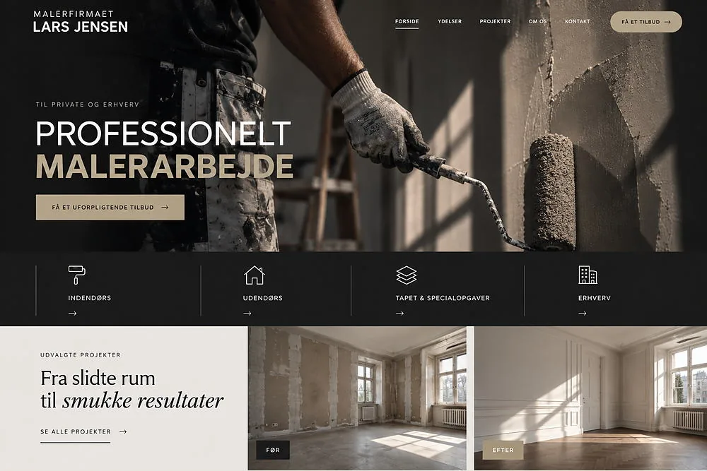
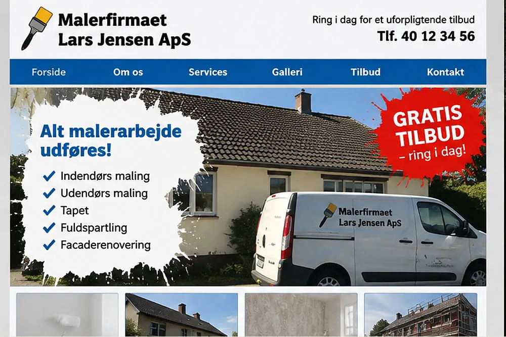
Før EfterWebsites that perform
Vi hjælper virksomheder med at optimere deres hjemmesider og omsætte besøgende til kunder — gennem skarpere budskaber, kompromisløst design og en tydelig vej til kontakt.
Strategi · Design · Optimering
Det vi laver
Det vi oftest laver: vi tager den side, I har, og gør den bedre. Tydeligere budskab, færre benspænd, hurtigere på mobil.
Skal der bygges nyt, gør vi det — men kun hvis det er dét, der flytter mest for jer.
Efter levering kan I tilkøbe ekstra justeringer, hvis der er noget, I gerne vil have ændret eller med på siden.
En demo, vi selv har lavet for at vise metoden. Træk i midten og se forskellen.
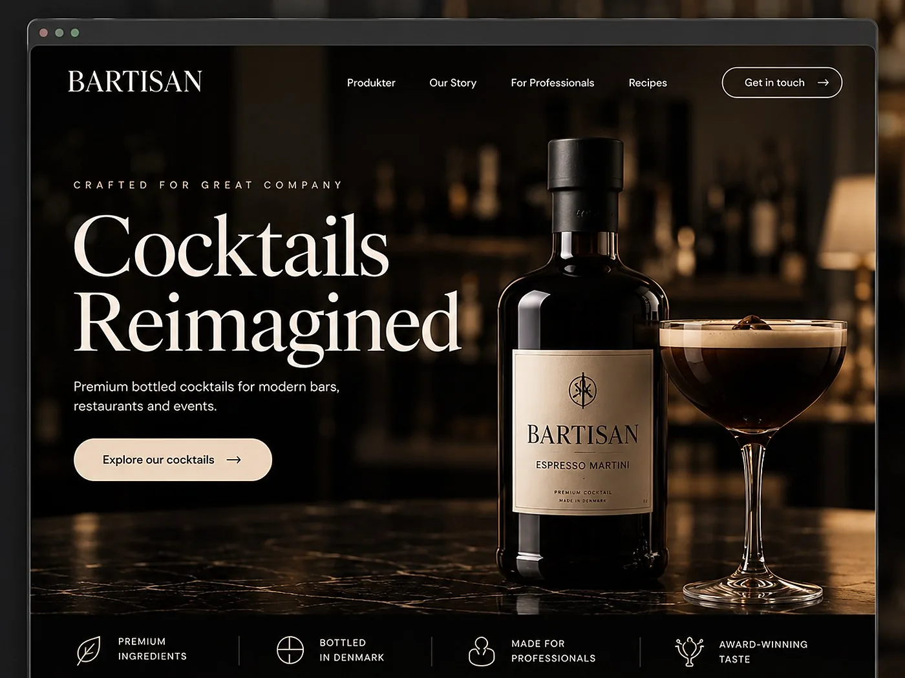
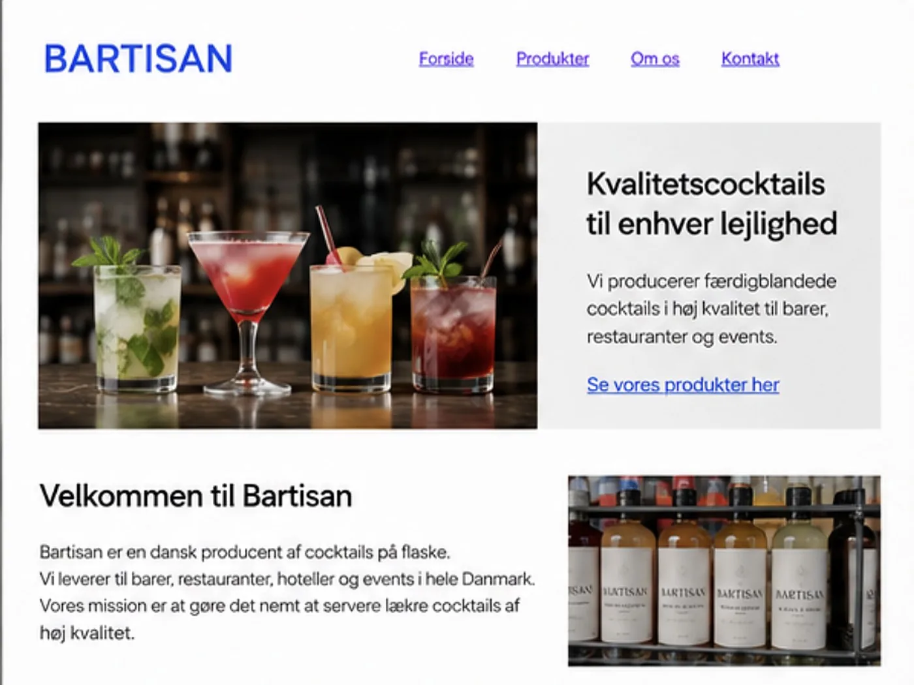
Før EfterSådan foregår det
I ved hele vejen hvad der sker, hvad det koster, og hvornår I hører fra os igen.
Vi laver en gennemgang af jeres side og ringer jer op, så vi kan tale den igennem sammen. Uforpligtende.
Til mødet har vi lavet en grundig gennemgang af siden, med konkrete forslag, fast pris og deadline.
Vi bygger. I får et link at følge med på undervejs, og vi lytter løbende til jeres input — har I ønsker eller noget, der også skal med på siden, tager vi det med, mens vi er i gang.
I kan tilkøbe mulighed for ekstra justeringer, hvis I senere får ønsker til noget, der skal ændres eller med på siden.
Ydelser og priser
Vi optimerer den hjemmeside, I har. Prisen afhænger alene af, hvor mange sider siden har, og den aftales inden vi går i gang — ikke en timepris der vokser undervejs.
Vi går hele siden igennem og bygger den om, så den er til at forstå og handle på. Layout og opbygning, alle tekster, skrifttyper, farver, billeder, knapper og rækkefølgen på siderne — det hele bliver gennemgået og rettet, ikke kun forsiden.
Pakkerne indeholder præcis det samme arbejde. Det eneste, der adskiller dem, er hvor mange sider jeres hjemmeside har.
Kun optimering
Vi arbejder på den hjemmeside, I har i forvejen. Domæne, hosting og andre abonnementer er ikke en del af det, vi leverer — de bliver, hvor de er.
Op til 4 sider
Fra 4.995 kr.
5–9 sider
Fra 7.495 kr.
10+ sider
Fra 9.995 kr.
Fem ændringer på jeres side, som I bruger, når I har brug for dem. Skriv til os, når noget skal rettes — en ny tekst, et nyt billede, en pris der er ændret — så trækker vi én fra kortet. Kortet udløber ikke.
5 ændringer
Samlet 1.495 kr.
Hænger flere små rettelser sammen — for eksempel tre tekster på den samme side — tæller vi det som ét klip. Er vi i tvivl, spørger vi jer, inden vi trækker det.
Alle priser er ekskl. moms. Den endelige pris aftales, når vi har været siden igennem, så I ved præcis hvad den lyder på, inden vi går i gang. Ekstra justeringer efter levering kan tilkøbes og indgår ikke i priserne.
Det vi hjælper med
Vi arbejder på tre ting, hver gang vi tager fat i en hjemmeside — udtrykket, budskabet og vejen til at tage kontakt.
Vi opdaterer design, farver, skrifttyper og billeder, så siden er behagelig at se på og signalerer den kvalitet, I leverer.
Vi sætter teksten op, så det står klart, hvad I sælger, hvem det er til, og hvorfor man skal vælge jer — uden at man skal lede efter det.
Vi rydder op i opbygning, knapper og formularer — også på mobil — så de besøgende nemt finder frem til jer, når de er klar.
Cases
Fra en traditionel og uinspirerende hjemmeside til en moderne, konverteringsoptimeret side, der afspejler brandets kvalitet.
Demo · ubestilt forslag
Bemærk: dette er vores eget forslag, lavet for at vise hvordan vi arbejder. Det er ikke en opgave bestilt eller godkendt af Bartisan, og der er ingen tal knyttet til det.
Rigtig kunde
Fra ingen hjemmeside til en helt ny. Malerfirmaet havde et domæne, men der lå kun en vedligeholdelsesside bag det — alle, der søgte dem frem, blev mødt af en besked om, at siden snart var klar. Nu har de en side, der viser arbejdet, fortæller hvem de er, og gør det let at bede om et tilbud.
Rigtig kunde · malerfirma
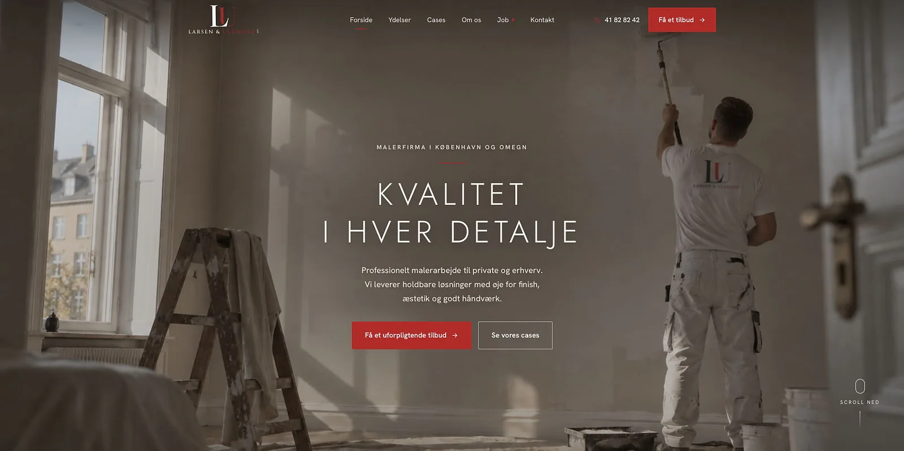
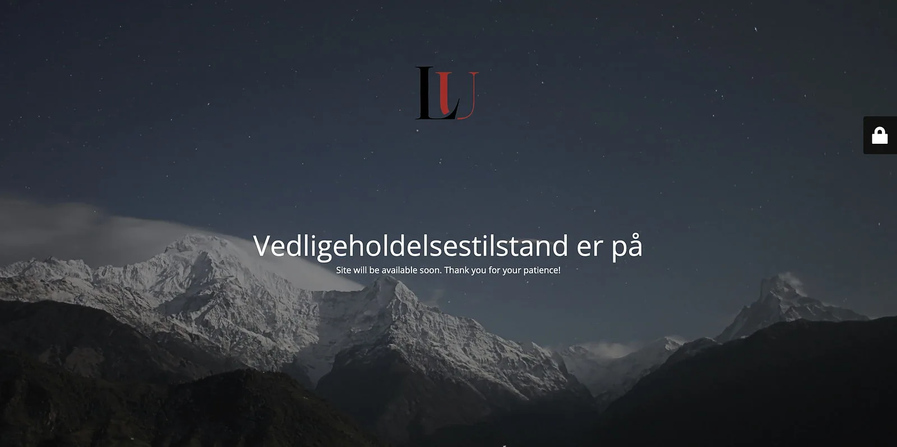
Før EfterBillederne er vist med kundens tilladelse.
Flere eksempler
Opdigtede virksomheder, vi har redesignet for at vise, hvad forskellen gør. Træk i hvert enkelt billede.


Før Efter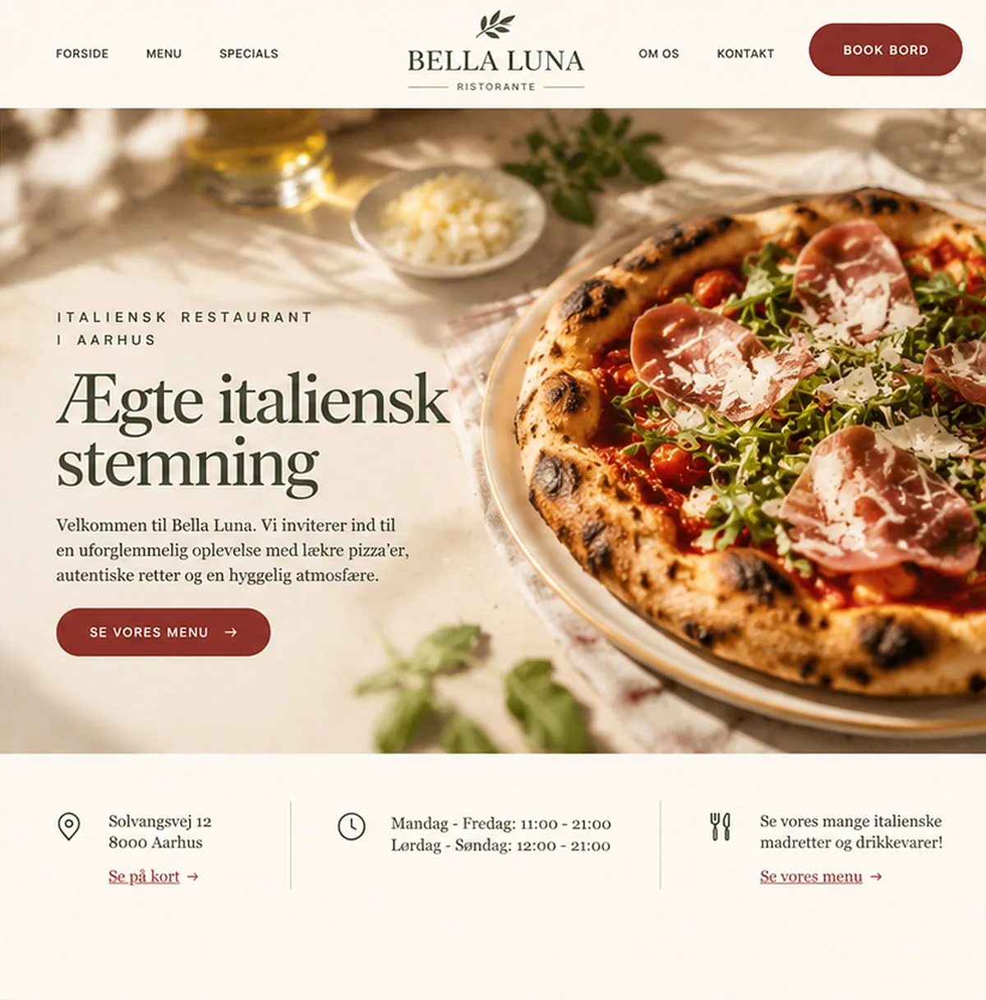
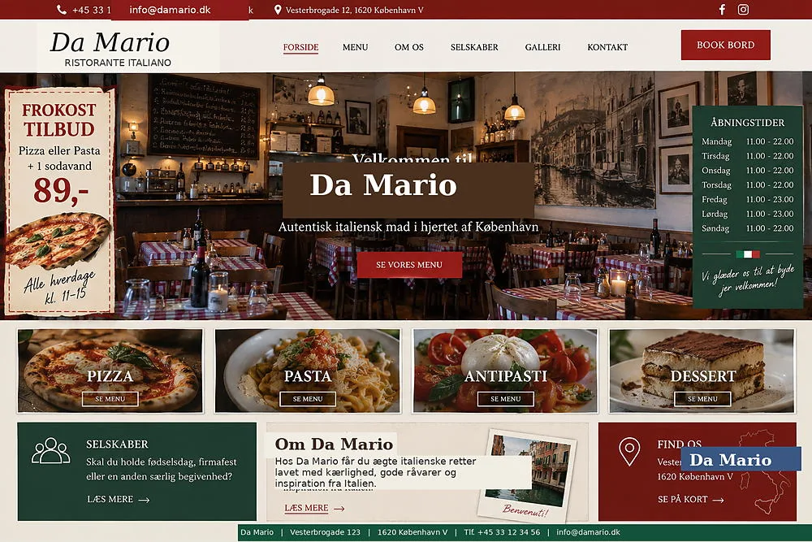
Før Efter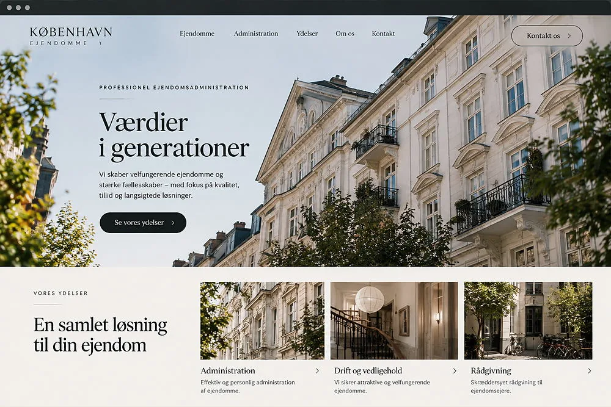
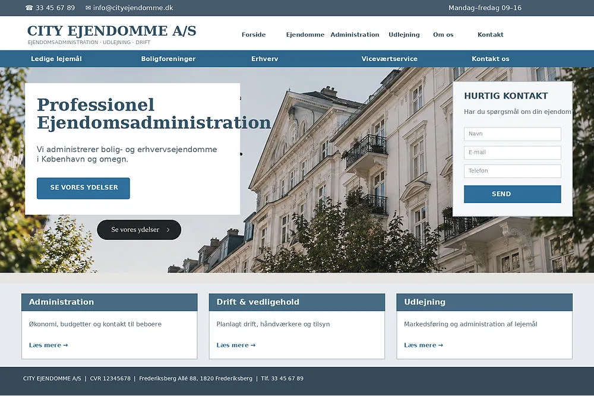
Før Efter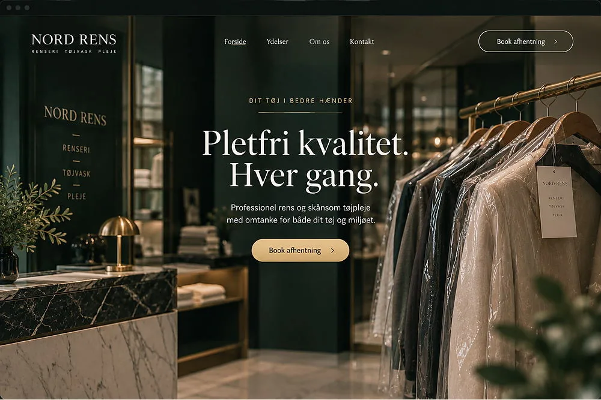
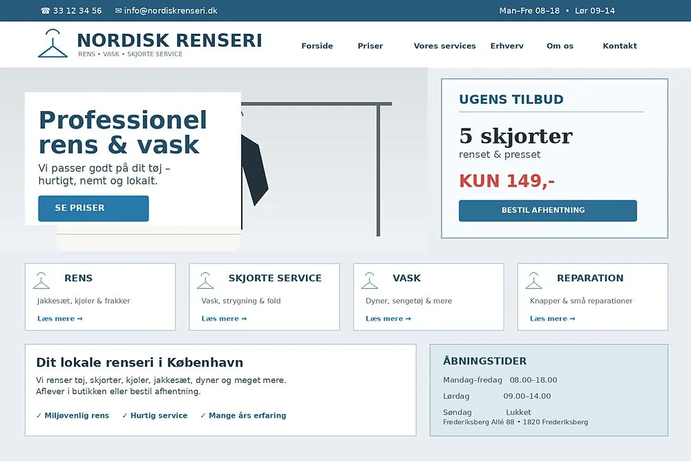
Før Efter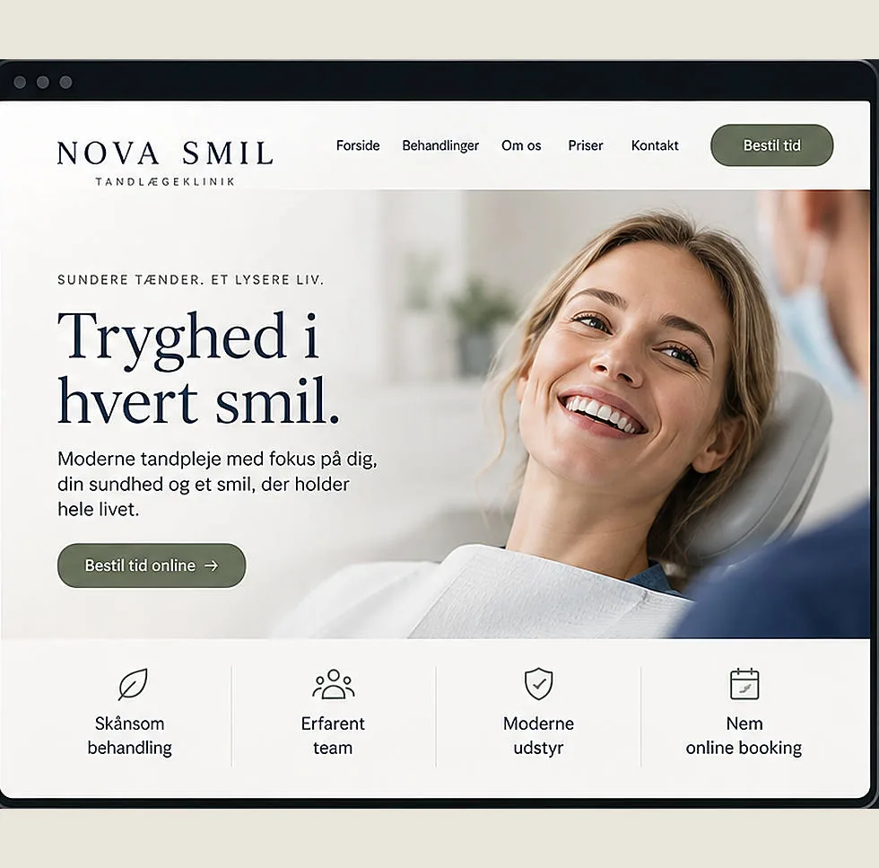
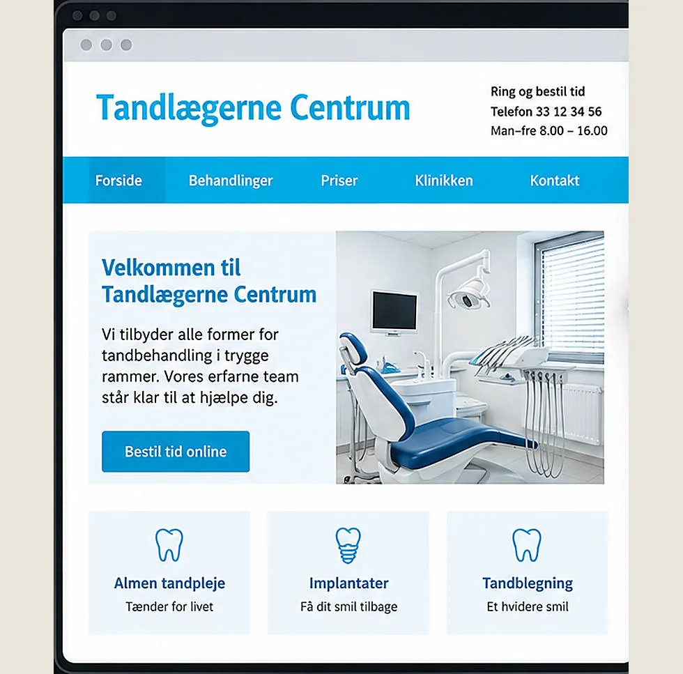
Før Efter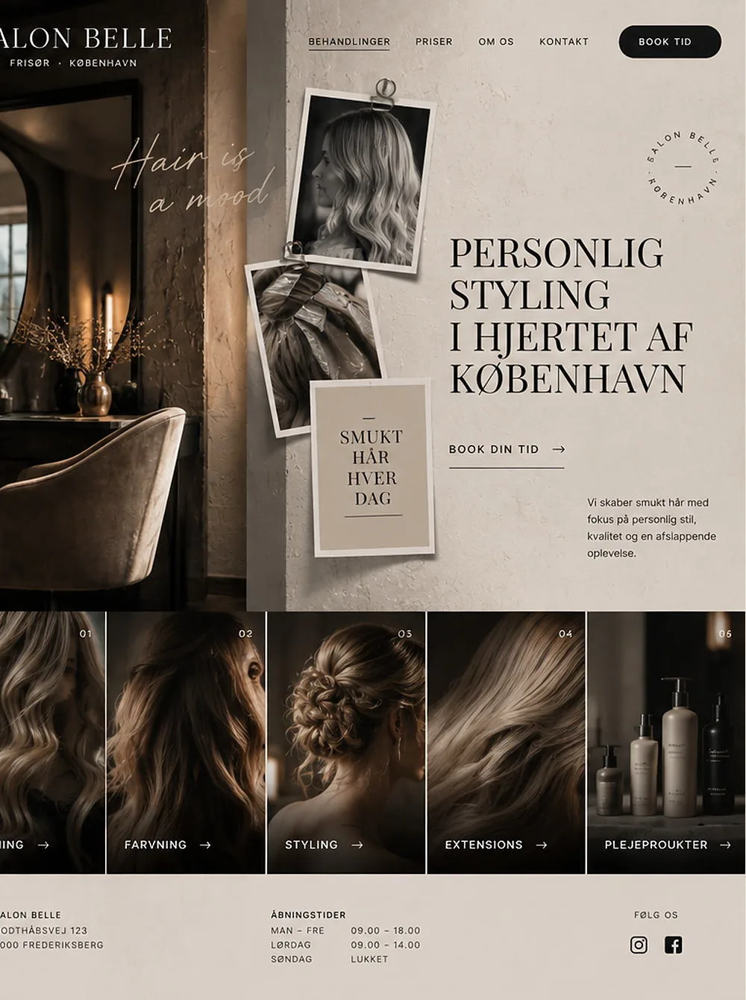
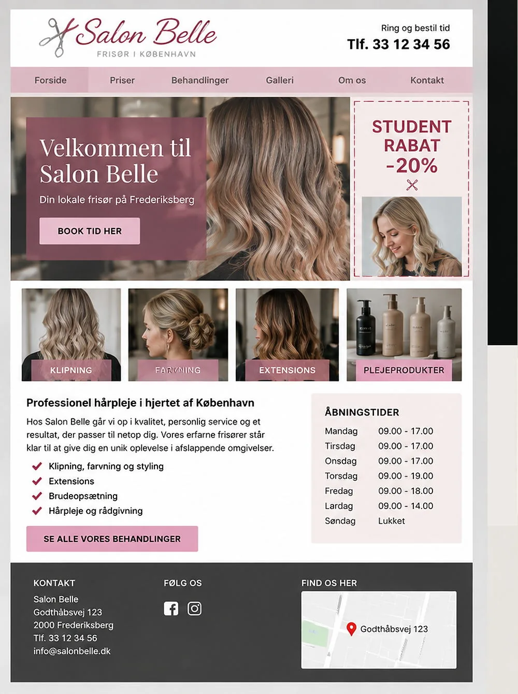
Før EfterAlle seks er vores egne eksempler — ikke rigtige kunder. De bliver skiftet ud, efterhånden som vi får arbejde ud af huset.
Om os
FAWA er et dansk webbureau, som vi to har startet sammen. Vi arbejder med virksomheder, der allerede har en hjemmeside, men ikke får nok ud af den — og vi bygger den om, så den er til at forstå, rar at se på og nem at handle på.
Vi er to om det hele. Der kommer ingen projektledere eller underleverandører ind over, og I taler med de samme to mennesker fra den første samtale, til siden er leveret. Vi tager kun de opgaver, vi kan nå at gøre ordentligt, og siger til, hvis vi ikke er de rigtige til opgaven.
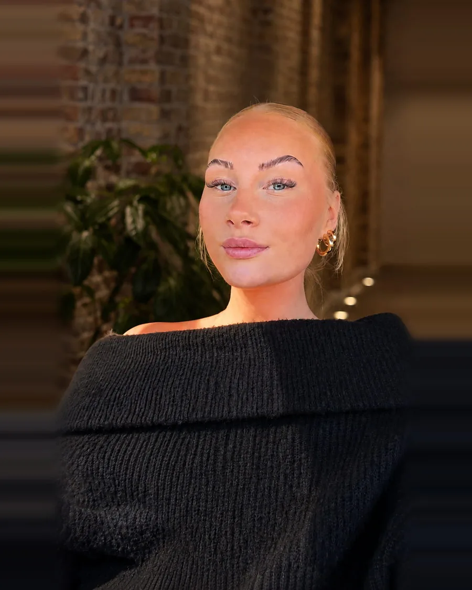
Co-founder
Co-founder
Prisen aftales, inden vi går i gang, og den holder. Ingen regninger, I ikke har set komme.
Er en ny side ikke det, der flytter mest for jer, siger vi det — også når det koster os opgaven.
Domæne, hosting og adgange står i jeres navn. I er ikke bundet til os bagefter.
Kontakt
Skriv til os, så finder vi et tidspunkt til et kort opkald. Vi kigger på jeres side inden, så vi har noget konkret at tale om — og I forpligter jer ikke til noget.
Privatlivspolitik
Gælder for fawa.dk. Politikken forklarer, hvordan FAWA indsamler, bruger, opbevarer og beskytter personoplysninger, når nogen besøger fawa.dk, kontakter os eller bliver kunde hos os.
FAWA er dataansvarlig for behandlingen af de personoplysninger, som er beskrevet i denne politik.
Spørgsmål om privatliv eller behandling af personoplysninger kan sendes til den e-mailadresse, der står ovenfor.
Vi kan behandle følgende typer personoplysninger:
Send ikke følsomme personoplysninger, CPR-numre eller andre fortrolige oplysninger gennem kontaktformularen, medmindre det er nødvendigt og aftalt med os på forhånd.
Når du kontakter FAWA via kontaktformularen eller e-mail, bruger vi oplysningerne til at besvare din henvendelse, forstå dit behov, udarbejde et tilbud og følge op på en mulig opgave. Oplyser du selv et telefonnummer, bruger vi det kun til at ringe dig op om netop den henvendelse.
Behandlingen sker som udgangspunkt på baggrund af vores legitime interesse i at besvare henvendelser og drive vores virksomhed, jf. databeskyttelsesforordningens artikel 6, stk. 1, litra f. Hvis henvendelsen vedrører en mulig aftale, kan behandlingen også være nødvendig for at gennemføre foranstaltninger på din anmodning, før en aftale indgås, jf. artikel 6, stk. 1, litra b.
Almindelige henvendelser opbevares som udgangspunkt i 12 måneder efter afslutningen af dialogen. Oplysninger kan opbevares længere, hvis de bliver relevante for et kunde- eller aftaleforhold, eller hvis vi har behov for at dokumentere forløbet.
Når du indgår en aftale med FAWA, behandler vi oplysninger for at levere ydelsen, kommunikere om projektet, administrere aftalen, udarbejde tilbud og fakturaer, modtage betaling, yde support og dokumentere vores arbejde.
Behandlingen sker primært, fordi den er nødvendig for at opfylde aftalen, jf. artikel 6, stk. 1, litra b. Oplysninger, som vi skal behandle for at overholde eksempelvis bogføringsregler, behandles efter artikel 6, stk. 1, litra c.
Regnskabsmateriale opbevares i den periode, som følger af den gældende bogføringslovgivning. Andre kunde- og projektoplysninger slettes eller anonymiseres, når de ikke længere er nødvendige, vurderet ud fra aftalen, dokumentationsbehovet og eventuelle retskrav.
Hvis FAWA tilbyder nyhedsbrev eller anden elektronisk markedsføring, sender vi det kun, når vi har et gyldigt grundlag, eksempelvis dit samtykke.
Samtykket er frivilligt og kan til enhver tid trækkes tilbage via afmeldingslinket i den enkelte e-mail eller ved at kontakte os. Tilbagetrækningen påvirker ikke lovligheden af den behandling, der fandt sted før tilbagetrækningen.
Vi opbevarer dokumentation for samtykket, så længe det er nødvendigt for at dokumentere, at markedsføringen er sendt lovligt.
fawa.dk sætter ingen cookies og bruger hverken statistik-, analyse- eller markedsføringsværktøjer. Den eneste lagring på siden er dit valg af sprog, som gemmes lokalt i din browser og ikke sendes videre.
Vores udbyder af hosting registrerer som led i den tekniske drift almindelige serverlogs, herunder IP-adresse og tidspunkt. Vi bruger ikke disse logs til at følge enkelte besøgende.
Fordi der ikke sættes cookies, der kræver samtykke, vises der ikke et cookiebanner på fawa.dk. Den fulde oversigt over lagring på siden står i cookiepolitikken. Tilføjer vi senere et værktøj, der kræver samtykke, indhenter vi det først og opdaterer begge politikker.
FAWA kan bruge leverandører, som hjælper os med at drive virksomheden og levere vores ydelser. Det kan være leverandører af:
Leverandører, der behandler oplysninger på vores vegne, må kun behandle oplysningerne efter vores instruks og på grundlag af en databehandleraftale, når dette er påkrævet. Oplysninger kan desuden videregives til myndigheder, revisorer eller rådgivere, hvis det er nødvendigt for at overholde en retlig forpligtelse eller varetage et retskrav.
Nogle leverandører kan behandle personoplysninger i lande uden for EU og EØS. Hvis det sker, sikrer vi et lovligt overførselsgrundlag, eksempelvis en tilstrækkelighedsafgørelse fra EU-Kommissionen, EU-Kommissionens standardkontraktbestemmelser eller andre lovlige sikkerhedsforanstaltninger.
Du kan kontakte os for at få nærmere oplysninger om grundlaget for en konkret overførsel.
Vi opbevarer kun personoplysninger, så længe det er nødvendigt. Når vi fastsætter perioden, ser vi blandt andet på formålet, kunde- eller aftaleforholdet, lovpligtige opbevaringskrav, dokumentationsbehov, mulige retskrav og oplysningernes karakter.
Når oplysningerne ikke længere er nødvendige, slettes eller anonymiseres de på en sikker måde.
FAWA anvender passende tekniske og organisatoriske sikkerhedsforanstaltninger for at beskytte oplysninger mod hændelig eller ulovlig sletning, tab, ændring, offentliggørelse, misbrug og uautoriseret adgang.
Foranstaltningerne kan blandt andet omfatte adgangsbegrænsning, stærke adgangskoder, tofaktorgodkendelse, sikkerhedskopiering, systemopdateringer og begrænsning af de oplysninger, vi indsamler.
Du har efter omstændighederne ret til:
Rettighederne er ikke absolutte. I visse situationer kan vi være berettigede eller forpligtede til fortsat at behandle oplysningerne. Kontakt contact@fawa.dk, hvis du vil gøre brug af dine rettigheder. Vi kan bede om oplysninger, der er nødvendige for at bekræfte din identitet.
Hvis du er utilfreds med FAWAs behandling af dine personoplysninger, opfordrer vi dig til først at kontakte os, så vi kan forsøge at finde en løsning.
Du har også ret til at klage til Datatilsynet, Carl Jacobsens Vej 35, 2500 Valby, telefon 33 19 32 00.
Læs mere og indgiv en klage på datatilsynet.dk
fawa.dk kan indeholde links til andre hjemmesider. FAWA er ikke ansvarlig for, hvordan disse hjemmesider behandler personoplysninger. Vi anbefaler, at du læser deres privatlivspolitikker.
Vi kan opdatere privatlivspolitikken, hvis vores behandling ændrer sig, eller hvis regler og myndighedsvejledning ændres. Den nyeste version vil altid være tilgængelig på fawa.dk. Datoen øverst viser, hvornår politikken senest er opdateret.
Cookiepolitik
Gælder for fawa.dk. Politikken forklarer, hvilke cookies og lignende teknologier fawa.dk bruger, hvorfor de bruges, og hvad du som besøgende selv kan styre. Kort fortalt: fawa.dk sætter ingen cookies og bruger hverken statistik eller markedsføring.
Cookies er små tekstfiler, som en hjemmeside kan gemme på din computer, telefon eller tablet. Cookies og lignende teknologier kan blandt andet bruges til at få hjemmesiden til at fungere, huske valg og måle brugen af siden.
Nogle cookies slettes, når browseren lukkes, mens andre gemmes i en bestemt periode. Cookies kan sættes af FAWA eller af en tredjepart, hvis fawa.dk bruger en ekstern tjeneste.
fawa.dk sætter ingen cookies. Hjemmesiden gemmer én enkelt oplysning lokalt i din browser, og kun hvis du selv skifter sprog:
Cookies og lignende lagring må sættes uden samtykke, når de er teknisk nødvendige for at levere en funktion, som den besøgende udtrykkeligt har anmodet om. At huske et sprogvalg, du selv aktivt har foretaget, er et eksempel på netop det.
Det er den eneste form for lagring, fawa.dk anvender. Den bruges ikke til statistik, profilering eller markedsføring, og den indeholder ingen oplysninger om dig ud over de to bogstaver, der angiver sproget.
Statistik- og markedsføringscookies samt de fleste tredjepartsteknologier må kun aktiveres, når der er givet samtykke. Samtykket skal være frivilligt, specifikt, informeret og utvetydigt, og det skal være lige så let at afvise som at acceptere.
fawa.dk bruger ingen af disse teknologier, og derfor vises der ikke et cookiebanner. Tilføjer vi på et tidspunkt for eksempel et statistikværktøj, indhenter vi samtykke først, opdaterer denne politik og udvider oversigten nedenfor.
Fordi fawa.dk udelukkende bruger teknisk nødvendig lagring, er der ikke noget samtykke at give eller trække tilbage, og du bliver derfor ikke mødt af et cookiebanner.
Du kan til enhver tid fjerne det gemte sprogvalg ved at rydde browserdata for fawa.dk i din browsers indstillinger. Siden vises herefter på dansk, indtil du vælger sprog igen.
Sprogvalget gælder for den browser og enhed, hvor valget blev foretaget. Bruger du en anden browser eller enhed, rydder browserdata eller browser privat, vises siden igen på dansk.
Oversigten viser al lagring på fawa.dk. Der er ingen cookies og ingen pixels — kun den ene post herunder, som ligger i din egen browser og aldrig forlader den.
| Kategori | Navn | Udbyder | Formål | Udløb |
|---|---|---|---|---|
| Nødvendig | fawa-lang | FAWA (fawa.dk) | Husker dit valg af sprog, dansk eller engelsk | Local storage. Gemt indtil du rydder browserdata |
fawa.dk indlejrer ikke eksterne tjenester. Skrifttyper, billeder og scripts leveres fra hjemmesidens eget domæne, så der ikke sker overførsel af din IP-adresse til tredjepart, når du åbner siden. Tilføjer vi senere en ekstern funktion, eksempelvis video, kort eller booking, bliver den ikke aktiveret, før du har givet samtykke, og denne politik bliver opdateret.
Du kan slette eller blokere cookies og local storage gennem indstillingerne i din browser. Fremgangsmåden afhænger af browser og enhed.
Blokerer du lagring på fawa.dk, mister du alene det gemte sprogvalg. Resten af hjemmesiden fungerer uændret.
Oplysninger indsamlet gennem cookies kan i nogle tilfælde være personoplysninger. Det gemte sprogvalg er ikke en personoplysning og kan ikke knyttes til dig. Du kan læse mere om FAWAs behandling af personoplysninger, behandlingsgrundlag, modtagere, opbevaring og dine rettigheder i privatlivspolitikken.
Spørgsmål om FAWAs brug af cookies kan sendes til contact@fawa.dk.
FAWA kan opdatere cookiepolitikken, når hjemmesiden, teknologierne eller reglerne ændres. Datoen øverst viser, hvornår politikken senest er opdateret.
FAQ
Svar på de spørgsmål, virksomheder typisk har om optimering og redesign af deres eksisterende hjemmeside.
01
Hvad FAWA tilbyder, og hvordan tilbuddet bliver sammensat.
FAWA hjælper virksomheder med at optimere og redesigne eksisterende hjemmesider. Vi forbedrer hjemmesidens visuelle udtryk, brugervenlighed og opbygning, så den fremstår mere moderne og professionel.
Vores primære ydelse er optimering og redesign af eksisterende hjemmesider. Kontakt os gerne, hvis du er i tvivl om, hvorvidt vi kan hjælpe med din hjemmeside.
Prisen afhænger af hjemmesidens størrelse, nuværende tilstand og omfanget af de ønskede ændringer. Vi arbejder med faste priser for forskellige typer og størrelser af projekter. Du får altid et konkret tilbud, inden arbejdet begynder, så du ved, hvad der er inkluderet i prisen.
Betalingen foregår som udgangspunkt via faktura. De konkrete betalingsbetingelser vil fremgå af det tilbud, du modtager fra FAWA.
Det afhænger af projektets størrelse og aftalens omfang. Eventuel forudbetaling eller depositum vil altid fremgå tydeligt af tilbuddet, inden projektet sættes i gang.
Nej. Hosting og domæne er som udgangspunkt ikke inkluderet i vores priser. Da vi arbejder med eksisterende hjemmesider, fortsætter hjemmesiden normalt hos kundens nuværende hosting- og domæneudbyder.
02
Sådan foregår processen fra den første gennemgang til den færdige levering.
Vi begynder med at gennemgå hjemmesiden og aftale, hvad der skal forbedres. Herefter modtager du et tilbud med en tydelig beskrivelse af opgaven. Når tilbuddet er godkendt, og vi har fået den nødvendige adgang, går vi i gang. Inden projektet afsluttes, gennemgår vi resultatet og foretager de nødvendige rettelser, som er omfattet af tilbuddet.
De fleste projekter forventes at kunne færdiggøres inden for cirka to uger, efter vi har modtaget den nødvendige adgang og alle relevante oplysninger. Leveringstiden afhænger af hjemmesidens størrelse, opgavens kompleksitet og svartiden undervejs. Den forventede leveringstid vil fremgå af tilbuddet.
Vi foretager de rettelser, der er nødvendige for at levere det resultat, som er aftalt i tilbuddet. Nye ønsker eller opgaver uden for det aftalte omfang betragtes som ekstraarbejde. Vi aftaler altid pris og omfang, inden ekstraarbejde udføres.
Vi skal have den nødvendige adgang til din hjemmeside og de systemer, der skal arbejdes i. Det kan eksempelvis være adgang til WordPress, Shopify eller et andet hjemmesidesystem. Du skal også fortælle os om særlige ønsker, krav eller elementer, som ikke må ændres. Vi beder aldrig om flere adgange end nødvendigt, og adgangsoplysninger skal deles sikkert.
Ja. Når projektet er afsluttet, kan du fortsat selv redigere hjemmesiden, hvis du har den nødvendige adgang og kendskab til systemet. FAWA leverer den færdige løsning, som er beskrevet i tilbuddet. Efterfølgende ændringer, som kunden selv eller andre foretager, er ikke omfattet af den oprindelige levering.
03
Justeringer, ekstraarbejde og den næste kontakt med FAWA.
Ja. Efter projektets afslutning kan du tilkøbe justeringer og hjælp fra FAWA. Den efterfølgende hjælp er ikke inkluderet i den oprindelige projektpris, medmindre det specifikt fremgår af tilbuddet. Pris og omfang aftales separat.
Hvis du får nye ønsker undervejs, vurderer vi, om de ligger inden for det aftalte projekt. Hvis ønsket ændrer projektets omfang, sender vi en pris på ekstraarbejdet. Vi udfører ikke ekstraarbejde uden en forudgående aftale.
Ja. FAWA henvender sig primært til virksomheder og arbejder som udgangspunkt B2B.
Kontakt FAWA og send et link til din nuværende hjemmeside sammen med en kort beskrivelse af, hvad du gerne vil have forbedret. Vi gennemgår hjemmesiden og vender tilbage med vores vurdering af opgaven og et konkret tilbud.
Send et link til din nuværende hjemmeside og en kort beskrivelse af, hvad du gerne vil have forbedret. Så gennemgår vi siden og vender tilbage.
Handelsbetingelser
Erhvervskunder og redesign af hjemmesider
Disse handelsbetingelser gælder for FAWAs aftaler med erhvervskunder om optimering og redesign af eksisterende hjemmesider. Det konkrete tilbud, projektbeskrivelsen og disse betingelser udgør samlet parternes aftale.
Betingelserne gælder kun for aftaler mellem FAWA og kunder, der handler som led i deres erhverv. FAWA indgår ikke aftaler med forbrugere på disse betingelser.
Hvis det konkrete tilbud indeholder vilkår, der afviger fra handelsbetingelserne, har tilbuddet forrang. Kundens egne indkøbs- eller standardvilkår gælder kun, hvis FAWA udtrykkeligt har accepteret dem skriftligt.
Et tilbud fra FAWA er gyldigt i den periode, der står i tilbuddet. Aftalen er indgået, når kunden skriftligt accepterer tilbuddet, medmindre andet fremgår af tilbuddet.
Ændringer til aftalen skal være skriftlige. E-mail anses som skriftlig kommunikation.
FAWA leverer de ydelser, som er beskrevet i tilbuddet. Ydelsen kan blandt andet bestå af visuel optimering, redesign, ændring af struktur, brugeroplevelse og opsætning på kundens eksisterende hjemmeside.
Hosting, domæne, tredjepartsabonnementer, licenser, billeder, tekstproduktion, integrationer og andre ydelser er ikke inkluderet, medmindre det fremgår udtrykkeligt af tilbuddet.
FAWA garanterer ikke bestemte placeringer i søgemaskiner, et bestemt antal henvendelser, en bestemt omsætning eller andre konkrete kommercielle resultater.
Kunden skal rettidigt levere de oplysninger, beslutninger, materialer og adgange, som FAWA har brug for. Adgange skal gives på en sikker måde og med de mindst nødvendige rettigheder.
Kunden er ansvarlig for, at materialer og instruktioner, som kunden leverer, er korrekte, lovlige og ikke krænker tredjemands rettigheder. Kunden skal have de nødvendige rettigheder til tekst, billeder, logoer, skrifter og andet materiale.
Hvis kundens manglende svar, materiale eller adgang forsinker arbejdet, udskydes leveringstiden tilsvarende. FAWA kan fakturere dokumenteret ekstraarbejde, som forsinkelsen medfører, efter forudgående orientering.
Den forventede leveringstid fremgår af tilbuddet. Et almindeligt projekt forventes som udgangspunkt leveret inden for cirka to uger efter aftalens indgåelse, modtagelse af opstartsbetalingen og modtagelse af alle nødvendige oplysninger og adgange.
Leveringstiden er et estimat, medmindre en bestemt dato udtrykkeligt er aftalt som bindende. FAWA orienterer kunden hurtigst muligt, hvis tidsplanen ændrer sig.
Prisen fremgår af tilbuddet. Alle priser er eksklusive moms, medmindre andet er angivet.
FAWA fakturerer som udgangspunkt 50 procent af projektprisen ved aftalens indgåelse og de resterende 50 procent ved levering. Arbejdet påbegyndes først, når opstartsbetalingen er modtaget, medmindre andet er skriftligt aftalt.
Betalingsfristen er 8 dage fra fakturadato. Ved forsinket betaling kan FAWA beregne renter og opkræve gebyrer efter rentelovens regler. FAWA kan sætte arbejdet i bero, mens en forfalden betaling mangler. En sådan pause kan påvirke leveringstiden.
Rettelser, der er nødvendige for at levere det resultat, som er beskrevet i tilbuddet, er inkluderet. Nye ønsker, ændret retning, nye funktioner eller arbejde uden for tilbuddet er ekstraarbejde.
FAWA oplyser pris eller beregningsgrundlag for ekstraarbejdet, inden det udføres. Ekstraarbejde udføres kun efter kundens skriftlige accept og kan medføre en ny tidsplan.
Ydelsen anses for leveret, når FAWA meddeler kunden, at det aftalte arbejde er færdigt og tilgængeligt til gennemgang eller brug.
Kunden skal gennemgå leverancen og meddele konkrete fejl eller mangler inden 7 arbejdsdage. Hvis kunden ikke reagerer inden fristen, anses leverancen for godkendt, uden at dette begrænser kundens ret til at gøre skjulte mangler gældende inden for rimelig tid.
En mangel foreligger kun, hvis leverancen væsentligt afviger fra det skriftligt aftalte. Smagsmæssige ændringer eller nye ønsker er ikke mangler.
Kunden kan efter levering tilkøbe justeringer og hjælp fra FAWA. Denne hjælp er ikke inkluderet i projektprisen, medmindre det står i tilbuddet.
Pris, omfang og leveringstid for efterfølgende justeringer aftales særskilt. Der er ikke tale om en gratis garanti- eller supportordning.
Kunden kan redigere hjemmesiden efter levering, hvis kunden har de nødvendige adgange og den nødvendige viden.
FAWA er ikke ansvarlig for fejl, sikkerhedsproblemer, nedetid eller andre konsekvenser, der opstår som følge af ændringer foretaget af kunden eller tredjepart efter levering. Fejlsøgning og genopretning kan tilbydes som ekstraarbejde.
Når alle fakturaer vedrørende projektet er betalt, får kunden en tidsubegrænset brugsret til det kundespecifikke design og materiale, som FAWA har udviklet som en del af leverancen.
FAWA bevarer rettighederne til egne metoder, processer, skabeloner, kodebiblioteker, værktøjer, generel viden og materiale, som var udviklet før projektet eller kan genbruges uafhængigt af kundens fortrolige oplysninger.
Tredjepartsmateriale, temaer, plugins, skrifter, billeder og software er underlagt de respektive leverandørers licensvilkår. Kunden er ansvarlig for løbende licenser og abonnementer efter levering, medmindre andet er aftalt.
FAWA må kun offentliggøre kundens navn, logo, hjemmeside eller projekt som reference, hvis kunden har givet skriftlig tilladelse. Parterne kan aftale tilladelsen i tilbuddet eller separat.
Parterne skal behandle ikke-offentlige oplysninger om den anden parts virksomhed, kunder, systemer og forretningsforhold fortroligt. Oplysninger må kun bruges til at opfylde aftalen og må ikke deles med uvedkommende.
Fortrolighedsforpligtelsen gælder også efter aftalens ophør.
Hver part er ansvarlig for sin egen behandling af personoplysninger. Hvis FAWA som led i opgaven behandler personoplysninger på kundens vegne, skal parterne indgå en databehandleraftale, før behandlingen begynder.
FAWAs behandling af kontakt- og kundeoplysninger er beskrevet i privatlivspolitikken på fawa.dk.
Hvis leverancen har en mangel, som FAWA er ansvarlig for, har FAWA ret og pligt til inden for rimelig tid at forsøge at afhjælpe manglen. Kunden skal give FAWA de nødvendige oplysninger og adgang til afhjælpningen.
Kunden kan ikke kræve forholdsmæssigt afslag, erstatning eller ophævelse, før FAWA har fået en rimelig mulighed for at afhjælpe, medmindre afhjælpning er umulig eller åbenbart udsigtsløs.
FAWA er ansvarlig efter dansk rets almindelige regler med de begrænsninger, der følger af dette punkt.
FAWA hæfter ikke for indirekte tab, driftstab, avancetab, tab af data, tabt omsætning, tabte besparelser, tab af goodwill eller krav fra tredjemand, medmindre tabet skyldes forsæt eller grov uagtsomhed.
FAWAs samlede ansvar i forbindelse med den konkrete aftale er begrænset til det beløb eksklusive moms, som kunden har betalt til FAWA for den konkrete opgave. Begrænsningen gælder ikke, hvis den ikke lovligt kan gøres gældende.
Kunden er ansvarlig for egen backup, medmindre backup udtrykkeligt er en del af tilbuddet. FAWA hæfter ikke for tredjepartssystemer, hosting, domæner, plugins, integrationer eller ændringer i eksterne tjenester.
Hvis kunden aflyser projektet efter aftalens indgåelse, skal kunden betale for det arbejde, FAWA allerede har udført, samt dokumenterede udgifter og bindende tredjepartsforpligtelser. Opstartsbetalingen modregnes i beløbet og tilbagebetales kun i det omfang, den overstiger FAWAs krav.
Ved væsentlig misligholdelse kan den ikke-misligholdende part ophæve aftalen, hvis misligholdelsen ikke er afhjulpet inden en rimelig skriftlig frist. Betalingsmisligholdelse anses som væsentlig, når betaling fortsat mangler efter skriftligt påkrav.
Ingen part er ansvarlig for manglende eller forsinket opfyldelse, der skyldes forhold uden for partens rimelige kontrol, herunder omfattende driftsforstyrrelser, cyberangreb, myndighedsindgreb, arbejdskonflikt, naturbegivenheder, brand, krig, epidemi eller svigt hos kritiske leverandører.
Den berørte part skal orientere den anden part hurtigst muligt. Tidsfrister forlænges i det omfang, hindringen påvirker opfyldelsen.
Aftalen er underlagt dansk ret.
Parterne skal først forsøge at løse en tvist gennem dialog. Hvis det ikke lykkes, skal tvisten afgøres ved Retten på Frederiksberg som aftalt værneting, medmindre sagen efter ufravigelige regler skal behandles ved en anden domstol.
Spørgsmål om tilbud, projekter eller handelsbetingelser kan sendes til contact@fawa.dk.
FAWA kan opdatere handelsbetingelserne for fremtidige aftaler. Den version, der var gældende, da kunden accepterede tilbuddet, gælder for den konkrete aftale, medmindre parterne skriftligt aftaler andet.